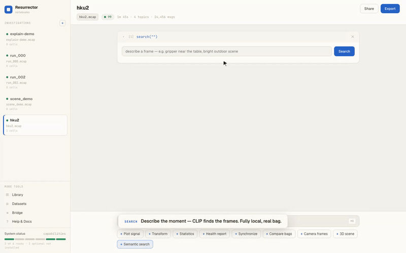

RosBag Resurrector
OPEN SOURCE · PYPIA pandas-like analysis workbench for ROS 2 (MCAP) bag files — the data platform for what robots already recorded. No ROS installation required.
- Bounded-memory streaming core: chunked CDR decode, running aggregators, and tolerance-bounded sync buffers analyze multi-GB logs with memory bounded by chunk size, not file size — enforced by a dedicated memory-regression CI suite.
- Bags → training data: streaming exporters to 7 analytics/ML formats (Parquet, HDF5, Zarr, LeRobot, RLDS…) with multi-stream time synchronization verified by eager/streaming equivalence tests.
- Data quality as a first-class layer: streaming health checks, declarative bag contracts usable as CI gates, and self-contained incident reports.
- Notebook UI: every capability is a cell — plot, brush a window for a grounded anomaly explanation, free-form Polars queries, cross-run comparison, local CLIP semantic frame search, one-click export.
Python · Polars · DuckDB · FastAPI · React/TypeScript · MCAP · 800+ tests · 15 releases
Semantic search, live — CLIP over real camera frames
